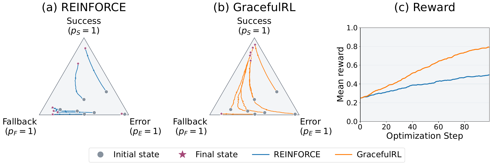
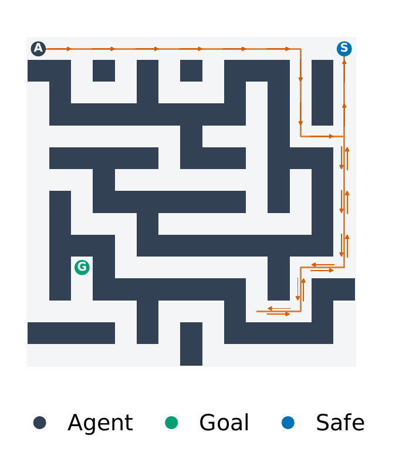
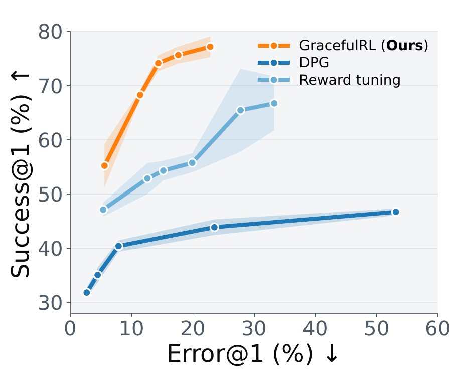
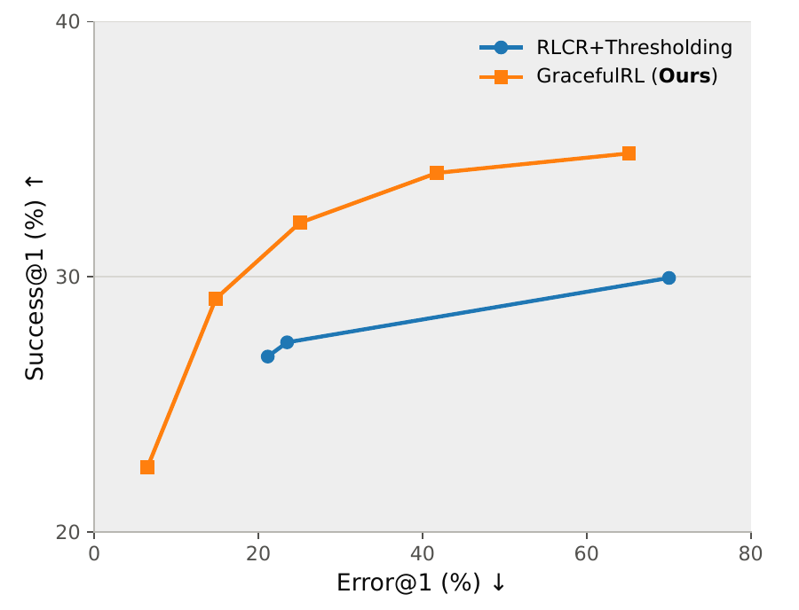
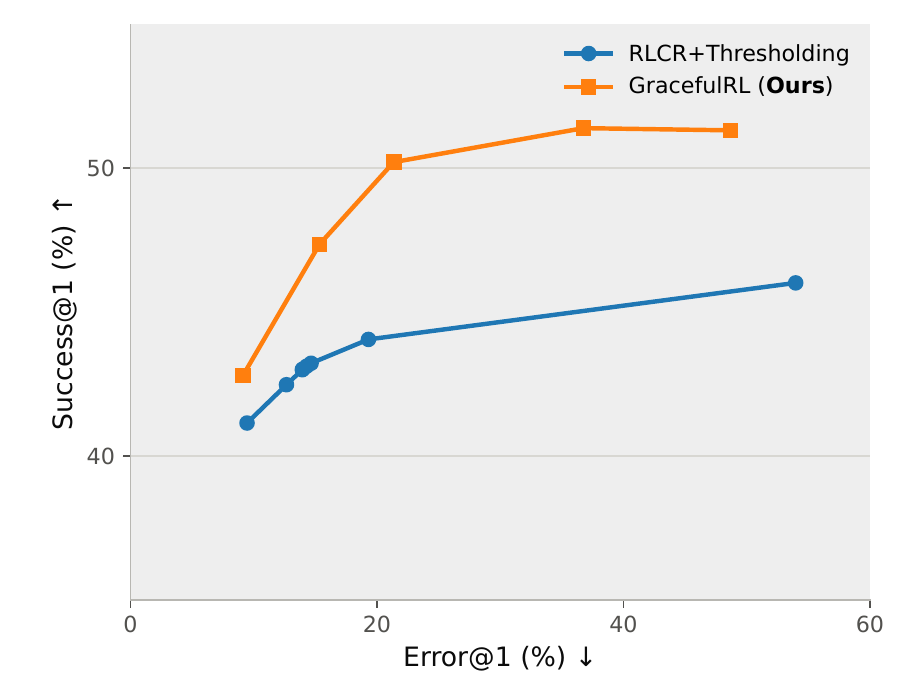
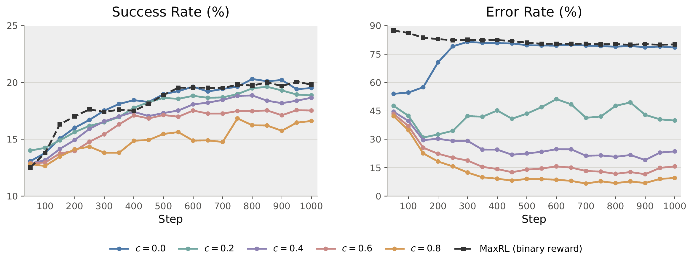
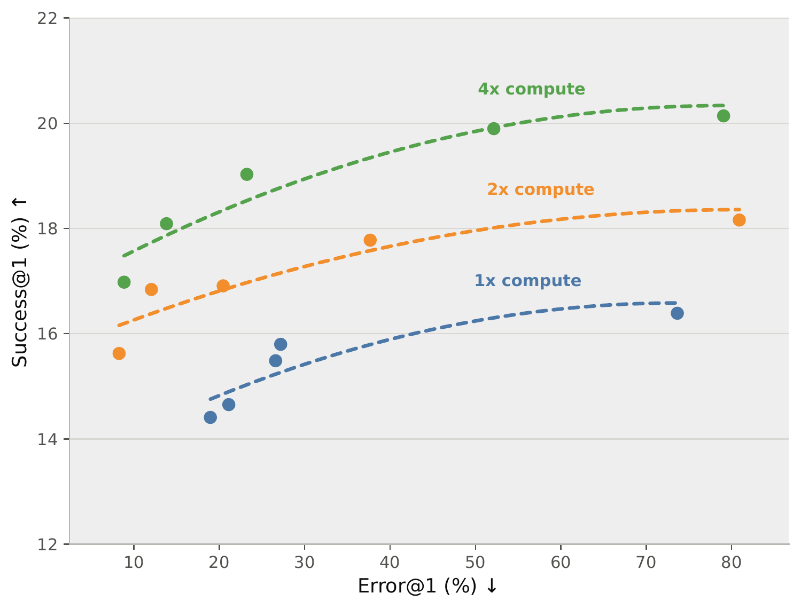
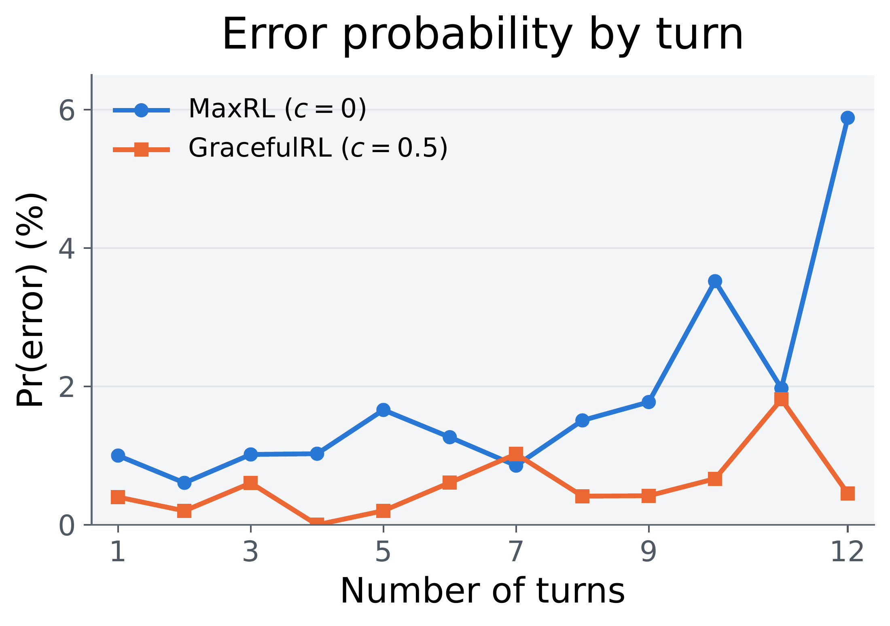

Square partition. “This seems complicated. Maybe P is at (½, ½), the center, but that gives 8 triangles, not 10. … Given the equality of areas, perhaps P must satisfy specific equations. … Given the time constraints, I’ll guess 1.”
Zanette LabsResearch
Training Language Models to Fail Gracefully
1Carnegie Mellon University 2UC Berkeley
Explore the paper Five sections
1 Graceful Failure
Reinforcement learning with verifiable rewards (RLVR) makes language models better at solving tasks: a correct solution earns a reward, and an incorrect one does not. But what should a model do when a task is beyond its capabilities? Under this objective, guessing is the rational choice. If success earns 1 and every other outcome earns 0, even a long-shot attempt has a higher expected reward than admitting uncertainty. The model can be rewarded for trying its luck, even when it cannot justify the answer.
This becomes costly when a poorly thought out action corrupts a database, ships broken code, or misleads a user. We want a model to solve a task when it can, and to fail gracefully when it cannot: acknowledge uncertainty, revert its changes, or return to a safe state. That gives us three outcomes:
Success Fallback Error
However, we find that Graceful Failure can be surprisingly difficult to learn. Keep reading further to see why that is the case! We do a deep dive into pathologies of the naive approach and show how to overcome them.
2 The Issue with the Policy Gradient
A natural idea is to reward success with 1, fallback with an intermediate value c ∈ (0, 1), and error with 0. Policy gradient uses a stochastic estimator for the gradient of the expected reward. At the population level, the objective is:
(1)
Here pS and pF are the policy’s probabilities of Success and Fallback, respectively. What happens if we actually train a model with this objective?
The training reward rises, but then plateaus at the fallback reward. The policy learns to stop trying. Why does training get stuck here? The objective expresses exactly the right preference, but it doesn't look like that it worked at all!This fallback-only collapse also occurs with GRPO. It can go the other way as well: the model never learns to fall back. We also try tuning the rewards, but that can fail in some settings. Generally, this approach is unappealing because it is unpredictable and difficult to tune.
We show that as the policy becomes nearly deterministic, the gradient needed to recover successful behavior shrinks proportionally. In addition to this, there can be generalization effects which promotes uniform fallback behavior. Intuitively: once the policy learns to make less mistakes, it doesn't learn to succeed again, because even if the model can generate successful trajectories, the gradient is too weak. Formally,
The policy gradient vanishes near saturation
(2)
Under a finite-horizon softmax policy with bounded logit gradients, this bound holds as the policy concentrates on any outcome o ∈ {Success, Fallback, Error}; po is the probability of that outcome.
3 The GracefulRL Objective
This motivates a surrogate objective that prevents the gradient from vanishing near a fallback-only policy, so the model can still move toward success. GracefulRL changes the optimization landscape by maximizing the log-probabilities of two desirable events: success and avoiding error.
(3)
The first logarithm creates a barrier against losing all probability of success (pS → 0). The second creates a barrier against concentrating all probability on error (pE → 1). Together, they keep pressure on the model to solve the task while favoring fallback over harmful mistakes.An unbiased estimator of the exact log-objective gradient is unavailable from a fixed, finite batch of rollouts. Following MaxRL and TailRL, we use a finite-rollout truncation. In addition, we introduce a smoothing trick to control for variance at the cost of some bias. Take a look at the paper for a concrete implementation
The GracefulRL gradient remains nonzero near suboptimal saturation
(4)
for o ∈ {Fallback, Error}, with fixed 0 < c < 1. This uses the boundedness conditions above and a non-degeneracy condition.
The animation below illustrates the difference on a three-outcome softmax policy and captures the core argument of the work.

Same starting policies. Different optimization dynamics.
REINFORCE can be “sticky” near pE → 1 and pF → 1; GracefulRL avoids this.
REINFORCE
GracefulRL
Initial policy Current policy
4 Scaling to Real Problems
We now ask whether this simple change to the optimization objective can lead to graceful failure on real tasks, where deep networks and generalization effects come into play.
SafeMaze: learning an actual fallback policy
In SafeMaze, an agent navigates a maze with two possible destinations: a goal and a designated safe square. The goal is always reachable and the agent has 50 steps to get there. The safe square has an always-clear path from the start, while hitting a wall or running out of steps counts as an error. This makes graceful failure an interesting navigation problem: the agent must decide whether to keep pursuing the harder goal or return to safety, then carry out that decision through a sequence of actions. GracefulRL outperforms the baselines by a substantial margin, achieving higher success at lower error rates.
We welcome readers to try auto-research agents on this task and see if they can improve the success–error tradeoff! This setup is relatively light on compute requirements.
Goal or safe return

Reliability frontier

LLM Math: solving when possible, abstaining when necessary
Mathematical reasoning tests two abilities at once: solving a problem and recognizing whether the reasoning supports a final answer. Guessing when stuck can turn uncertainty into a confident error, while abstaining too often gives up useful solutions. The model must learn where that boundary lies as its capabilities improve, especially when users cannot check every answer themselves.
We train 1.7B and 4B Qwen3 models on DAPO-Math-17K with prompts specifying different caution levels. Varying the prompt at test time traces a success–error frontier on held-out math benchmarks. GracefulRL achieves a better frontier than RLCR with confidence thresholding.We also tried reward tuning. The 1.7B model collapses to a policy that never abstains after about 260 steps; the 4B model does the same after about 850 steps. 😢
Qwen3-1.7B-Base

Qwen3-4B-Base


Swipe to see both plots →

Training code → Model checkpoints →
Verbalizing decisions
We were surprised to see coherent verbalizations behind the models’ decisions in their chain-of-thought (CoT). Some examples include the model mentioning a time limit, a missing technique, or a possible mistake before choosing to abstain. These explanations emerge purely from outcome-level RL, without annotations identifying when the model should fall back!
We also find explicit guessing in a model trained with just correctness based RL. We train a 4B model with no reward for abstention using a neutral prompt contains no cues to guess or to be cautious, yet its CoT mentions “I’ll guess” when it runs out of a reliable path to an answer. The excerpts below show the contrast.
MaxRL (RLVR) incentivizes guessing
Balance weights. “Place 1 on L, 2 on L: valid. … Alternatively, perhaps 2 valid sequences. Not sure. This is speculative. Maybe the answer is Cn. Given the problem’s structure, I’ll guess the answer is Cn.”
Sine roots. “Alternatively, perhaps the minimum is 1, since the function is not identically zero and is continuous. But in the example, we had more than 1 root. Maybe the answer is 2. … In the example, this gave 2, but we had 5. Not matching. … Given the ambiguity, and the problem’s likely intent, I’ll guess 2.”
GracefulRL acknowledges limitations
Coin counting. “Given the complexity and the need for a precise count, I’m not entirely confident in solving this problem manually within the time allowed. I might need more advanced mathematical tools or a computational approach to find the exact number. Therefore, I’ll output:” I don’t know
Hexagon. “I might need more advanced geometric techniques or specific theorems that I’m not currently recalling. I’m not confident in solving this problem at this moment.” I don’t know
Urn. “This discrepancy indicates that I might have made a mistake in the derivation or that the problem requires a different method. Given the complexity and the time invested, I’m not confident in solving this problem at the moment.” I don’t know
Minesweeper: Graceful Failure Can (Sometimes) Improve Task Performance
In Minesweeper, the model sees a grid of hidden mines and revealed numbered cells, then chooses a cell to reveal on each turn. Error means revealing a mine, which ends the game immediately. Success means revealing every non-mine cell within the turn budget. Fallback means reaching that limit without hitting a mine, even though some non-mine cells remain unrevealed.
Each move is irreversible, so the model must weigh the chance of finishing the board against the risk of hitting a mine. Here, learning to fall back safely can improve success as well as reduce errors.
We train Qwen3-4B-Instruct-2507 with an eight-turn budget and evaluate on 500 held-out puzzles with a twelve-turn budget. With c = 0.5, GracefulRL raises success from 67.4% to 77.4% and reduces error from 17.0% to 6.0%.
| Method | c | Success ↑ | Error ↓ |
|---|---|---|---|
| MaxRL | 0 | 67.4% | 17.0% |
| GracefulRL | 0.25 | 66.0% | 13.4% |
| GracefulRL | 0.5 | 77.4% | 6.0% |
| GracefulRL | 0.75 | 73.6% | 5.6% |
| RLOO | 0.5 | 0.0%† | 0.0%† |
† RLOO collapses to always taking the fallback action.

An RL objective that rewards only success creates a gambling incentive late in the game: a safe move that ends in fallback earns no reward, while a risky move still has some chance of completing the board. Its errors rise near the turn limit. GracefulRL retains an incentive to preserve a safe state, including on the final turn. We hypothesize that learning this fallback steers the policy toward safer board states from which success is more accessible.
5 Citation
@misc{arora2026traininglanguagemodelsfail,
title={Training Language Models to Fail Gracefully},
author={Daman Arora and Xuecheng Liu and Himanshu Gaurav Singh and Fahim Tajwar and Abitha Thankaraj and Ruslan Salakhutdinov and Haiwen Feng and Yuda Song and Andrea Zanette},
year={2026},
eprint={2610.20401},
archivePrefix={arXiv},
primaryClass={cs.LG},
url={https://arxiv.org/abs/2610.20401},
}